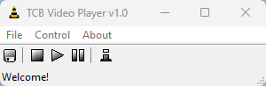

Home

TCB Video Player Is A Basic Video Player Made With PureBasic!
It Can Run Some Video File Types Without Having K Lite Codec Pack Installed
And If You Want More File Types To Run Then Download The K Lite Codec Pack Basic That Is Included In The Archive!
©2023 TCB Video Player by Briefiberg!